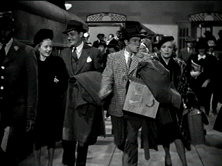

|
My Favorite Blonde/ B-, A- |
|
Universal/1942/78/FS 1.33/BW |
Nazis are on the loose in pursuit of secret
information being delivered by beautiful blonde British agent Karen Bentley.
My Favorite
Blonde cuts to the quick, introduces the villains and heroine, and by the
time Larry Haines makes his delightful entrance on stage opposite a penguin, the
pattern of the film is augmented by the comic's excellent patter. Yes, and you have to believe that the penguin work is some of the best on
film.
Bentley latches onto Haines to throw a curve to her pursuers,
but the only curves she displays are to tempt Haines. She joins Haines on
his cross-country trip to Hollywood where the Percy the penguin has been
hired for a movie.
 |
| A train
to catch. penguin in hand. ©Universal |
Larry Haines is a natural for Bob Hope. The
wisecracking belongs to the character and Hope fits into Haines' skin like a
tux on a penguin. Madeleine Carroll has a lot of fun with the role. Hope and
Carroll play well off each other. Carroll's rapid fire changes in amorous
approaches leads to some great reactions from Hope. Madeleine Carroll has been down the road of spy and
road and train flicks before, most notably in the classic
The 39 Steps.
She's right at home dodging bad men in black and coyly seducing Bob Hope. Hope does some nice wire work in the finale of his stage act.
The chase is entertaining, the various venues make the
most of the thin script, and the filmmakers get
maximum mileage out of Percy the penguin considering the bird's short
stride. Perhaps the movie drags a bit stretching out it's one-trick plot. The
Hope-Carroll byplay needs to be outstanding to overcome it. The villains are a great bunch if character actors led by Gale
Sondergaard and George Zucco. The stare Hope down with the best of them. Not
a hint of a smile crosses any of their faces. Bing Crosby makes a short cameo appearance and Hope makes the most of it. Classy
production design and a well-photographed film. The score perfectly
represents the era.
A little aside: Dooley Wilson, the memorable piano player in
Casablanca
(Made the same year) has a minute role as a porter.
Astounding contrast ratio. Incredibly sharp,
well-preserved film elements. Even the opening fog is reasonably controlled
for the most part. Deep, luscious blacks stand out, plaids, tweeds, sharp
edges are all perfectly stable. Shadow detail is very good. Check out the
beautiful rendering of a woven lampshade on the train as Hope gets
surrounded by the bad guys. There's only one full length scratch noticeable
for a short time at the Chicago apartment building.
My Favorite Blonde is packaged on single disc with the
star-studded Star Spangled Rhythm in which Hope and Crosby have roles.
Reviewed on a Sharp 9000VX DLP Projector
|
|
|
|

The Movie Poster Archive
includes extensive poster images from the films of stars like Susan Hayward,
Kirk Douglas, Katharine Hepburn and many more. Our featured star is
Danny Kaye.


Charade/A,B

Successfully combining romantic comedy and suspense is no small achievement.
Charade does it with panache.

Selections from the
Feature Archive include articles on Akira Kurosawa,
Blonde Bimbos,
Frank Darabont,
Steven Culp,
John Herzfeld or
Vietnam: The Hollywood Pariah, and many
more....
Thorough a Lens, Obliquely

Flicks about Hollywood make fascinating material, but the establishment
isn't always totally forthcoming. Click on the Hollywood montage for a look
at some of the best Hollywood films about the movie-making business.
Hitchcock on DVD

Information and review links to Alfred Hitchcock on DVD
 
DVD Demystified makes it all clear. The official Internet DVD FAQ
for the rec.video.dvd Usenet newsgroups.

List
Your DVD
Reader DVD Reviews and base DVD information. You can also submit
a list of your favorite DVDs.
|